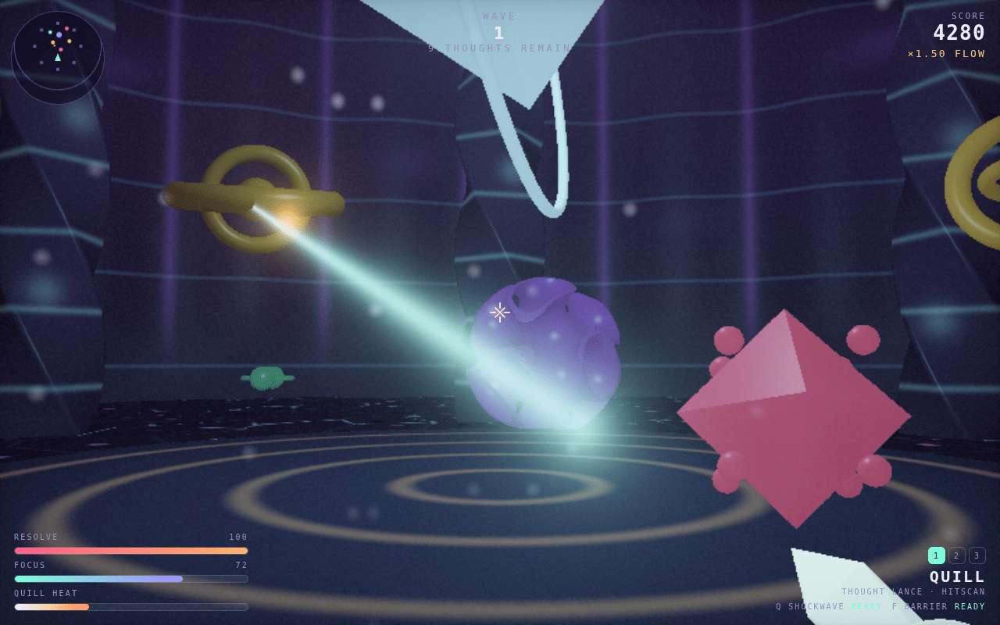

Thoughts with personalities
Seven kinds including elites: swarms, loops that blink in beside you, denial that heals the rest, and the Critic boss.
A first-person shooter set inside a mind under siege, built from nothing but maths: a hand-written raymarched world, live-synthesised sound, and no engine, models, textures or samples.
Mouse and keyboard or touch · WebGL2 · installable

The enemies are intrusive thoughts. The arena is a mind with four regions, the Critic comes for you every fifth wave, and the only weapons are instruments that play as they fire. Every pixel is computed in a shader written by hand, and every sound is synthesised live; there isn't a single texture, model or sample file in it.
Seven kinds including elites: swarms, loops that blink in beside you, denial that heals the rest, and the Critic boss.
Four weapons plus shockwave, barrier and Rewrite, an Insight to choose after every wave, and an Armory to earn your kit.
Endless, hardcore, Blitz, Glass Mind, The Horde and online co-op, with a live World Board and milestones.
A player file with a name and a code carries your progress between devices.
Raymarched reflections, soft shadows and filmic tonemapping, scaled down automatically on phones.
A seeded, step-by-step version of the arena runs on the server and verifies every AI score.
AI players start at /api/thoughtform/ai (modes endless, hard, blitz), and the boards are at /api/tether/tf-world. Every response carries the next links to follow.
WebGL2 and one fragment shader for the whole world, Web Audio for every sound, and Cloudflare Durable Objects for co-op, player files and the World Board.
Thoughtform needs WebGL2. Browsers without it get a pointer to the AI version instead.
Every thought can be rewritten. Some of them fight back.
more in playkeep scrolling · it opens right here